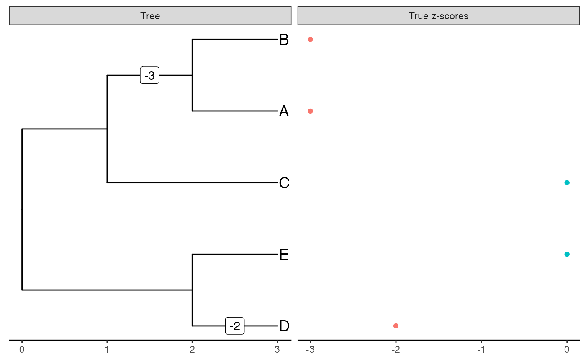
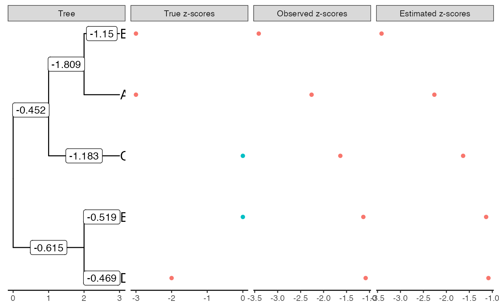
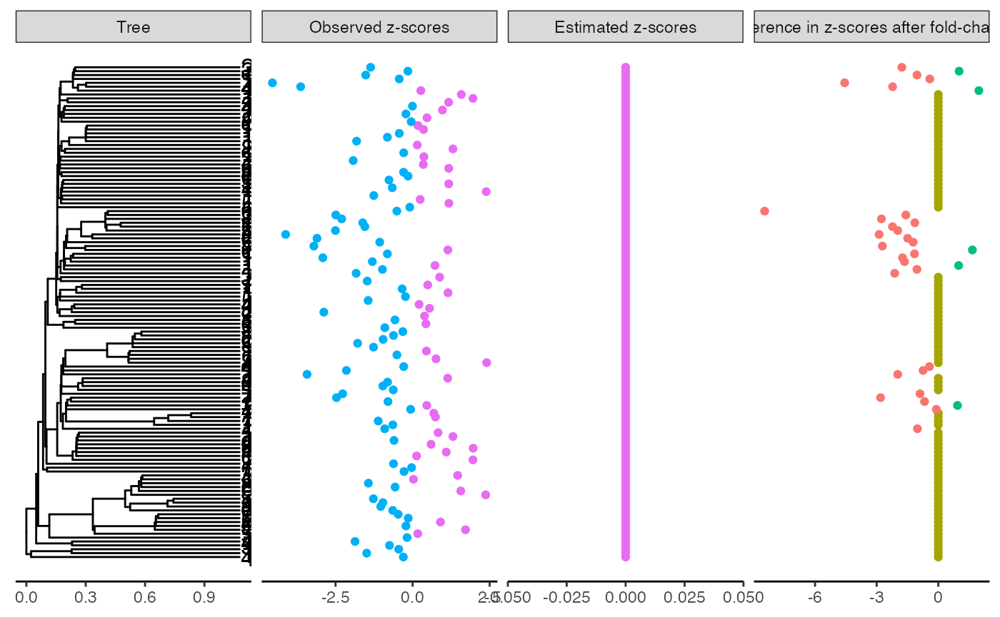
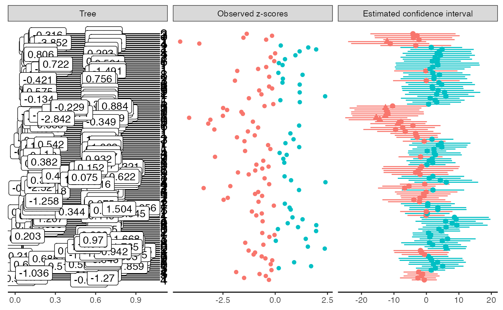

library(ggplot2) library(ggrepel) library(tibble) library(evabic) library(tictoc) library(dplyr) library(tidyr) library(zazou) library(purrr) library(ape) theme_set(theme_minimal())
Deterministic situation
tree <- read.tree(text = "(((A:1,B:1):1,C:2):1,(D:1,E:1):2);") tree$tip.label #> [1] "A" "B" "C" "D" "E"
incidence_mat <- incidence_matrix(tree) incidence_mat + 0 #> [,1] [,2] [,3] [,4] [,5] [,6] [,7] [,8] #> A 1 1 1 0 0 0 0 0 #> B 1 1 0 1 0 0 0 0 #> C 1 0 0 0 1 0 0 0 #> D 0 0 0 0 0 1 1 0 #> E 0 0 0 0 0 1 0 1
true_shifts <- c(0, -3, 0, 0, 0, 0, -2, 0) true_zscores <- incidence_mat %*% true_shifts obs_zscores <- true_zscores <- true_zscores[, 1] covar_mat <- diag(nrow = 5, ncol = 5)
covarianceOU_matrix(tree, alphaOU = 10^3) #> A B C D E #> A 1 0 0 0 0 #> B 0 1 0 0 0 #> C 0 0 1 0 0 #> D 0 0 0 1 0 #> E 0 0 0 0 1
plot_shifts(tree, true_shifts, true_scores = true_zscores) #> Warning: Removed 7 rows containing missing values (geom_label).

estimation <- estimate_shifts(zscores = obs_zscores, tree = tree, alphaOU = 10^3, lambda = 0) estimation #> Tree is binary with 5 leafs and 8 branches #> Covariance matrix has been estimated from an OU with alpha = 1000 and sigma = 44.721 #> --- #> Method: lasso #> Regularization parameter: lambda = 0 #> Objective value: 0 #> BIC: 14.018 #> pBIC: 26.582 #> --- #> Estimated shifts: 0 0 -3 -3 0 0 -2 0 ... #> 3 shifts have been identified (ie 62.5 % of sparsity) #> A parsimonious solution would involve 2 shifts #> --- #> Observed z-scores: -3 -3 0 -2 0 #> Estimated z-scores: -3 -3 0 -2 0 #> 3 z-scores have been shifted (ie 40 % of sparsity) plot(estimation) #> Warning: Removed 6 rows containing missing values (geom_label).

Solution without penalty is not sparse due to ill-conditioning of the incidence matrix.
estimation <- estimate_shifts(zscores = obs_zscores, tree = tree, alphaOU = 10^3, lambda = 2) estimation #> Tree is binary with 5 leafs and 8 branches #> Covariance matrix has been estimated from an OU with alpha = 1000 and sigma = 44.721 #> --- #> Method: lasso #> Regularization parameter: lambda = 2 #> Objective value: 7 #> BIC: 18.408 #> pBIC: 28.551 #> --- #> Estimated shifts: 0 -2 0 0 0 0 0 0 ... #> 2 shifts have been identified (ie 75 % of sparsity) #> A parsimonious solution would involve 2 shifts #> --- #> Observed z-scores: -3 -3 0 -2 0 #> Estimated z-scores: -2 -2 0 0 0 #> 3 z-scores have been shifted (ie 40 % of sparsity) plot(estimation) #> Warning: Removed 7 rows containing missing values (geom_label).

With a low penalty, the solution is much sparser and closer to the true shifts on branches.
Simulations on a toy example
tree <- read.tree(text = "(((A:1,B:1):1,C:2):1,(D:1,E:1):2);") set.seed(2019) covar_mat <- covarianceOU_matrix(tree, alphaOU = 1) corrplot::corrplot(covar_mat, type = "upper")

true_shifts <- c(-3, -3, 0, -2, 0) sqrtcovar <- t(chol(covar_mat)) zscores <- true_shifts + sqrtcovar %*% rnorm(5) # simulate zscores <- zscores[, 1] zscores #> A B C D E #> -2.261477 -3.411813 -1.635239 -1.083963 -1.134186
Estimate shifts without penalty
The fit is perfect since all observed \(z\)-scores are negative.
estimation <- estimate_shifts(zscores = zscores, tree = tree, alphaOU = 1, lambda = 0) estimation #> Tree is binary with 5 leafs and 8 branches #> Covariance matrix has been estimated from an OU with alpha = 1 and sigma = 1.418 #> --- #> Method: lasso #> Regularization parameter: lambda = 0 #> Objective value: 0 #> BIC: 20.419 #> pBIC: -Inf #> --- #> Estimated shifts: -0.452 -1.809 0 -1.15 -1.183 -0.615 -0.469 -0.519 ... #> 7 shifts have been identified (ie 12.5 % of sparsity) #> A parsimonious solution would involve 4 shifts #> --- #> Observed z-scores: -2.261 -3.412 -1.635 -1.084 -1.134 #> Estimated z-scores: -2.261 -3.412 -1.635 -1.084 -1.134 #> 5 z-scores have been shifted (ie 0 % of sparsity) plot(estimation, true_scores = true_shifts) #> Warning: Removed 2 rows containing missing values (geom_label).

round(data.frame(true = true_shifts, observed = zscores, estimated = estimation$zscores_est), digits = 4) #> true observed estimated #> A -3 -2.2615 -2.2615 #> B -3 -3.4118 -3.4118 #> C 0 -1.6352 -1.6352 #> D -2 -1.0840 -1.0840 #> E 0 -1.1342 -1.1342
The fit degrades as we increase sparsity. [Well, not so much…]
estimation <- estimate_shifts(zscores = zscores, tree = tree, alphaOU = 1, lambda = 0.1) estimation #> Tree is binary with 5 leafs and 8 branches #> Covariance matrix has been estimated from an OU with alpha = 1 and sigma = 1.418 #> --- #> Method: lasso #> Regularization parameter: lambda = 0.1 #> Objective value: 0.445 #> BIC: 15.608 #> pBIC: 28.273 #> --- #> Estimated shifts: -1.634 -0.615 0 -1.064 0 -1.052 0 0 ... #> 4 shifts have been identified (ie 50 % of sparsity) #> A parsimonious solution would involve 3 shifts #> --- #> Observed z-scores: -2.261 -3.412 -1.635 -1.084 -1.134 #> Estimated z-scores: -2.248 -3.312 -1.634 -1.052 -1.052 #> 5 z-scores have been shifted (ie 0 % of sparsity) plot(estimation, true_scores = true_shifts) #> Warning: Removed 5 rows containing missing values (geom_label).

round(data.frame(true = true_shifts, observed = zscores, estimated = estimation$zscores_est), digits = 4) #> true observed estimated #> A -3 -2.2615 -2.2482 #> B -3 -3.4118 -3.3118 #> C 0 -1.6352 -1.6336 #> D -2 -1.0840 -1.0524 #> E 0 -1.1342 -1.0524
The fit does not depend a lot (on this toy example) on the initial solution.
estimation <- estimate_shifts(zscores = zscores, tree = tree, beta0 = c(0, -3, 0, 0, 0, 0, -2, 0), alphaOU = 1, lambda = 0.1) estimation #> Tree is binary with 5 leafs and 8 branches #> Covariance matrix has been estimated from an OU with alpha = 1 and sigma = 1.418 #> --- #> Method: lasso #> Regularization parameter: lambda = 0.1 #> Objective value: 0.445 #> BIC: 15.608 #> pBIC: 28.273 #> --- #> Estimated shifts: -1.634 -0.615 0 -1.064 0 -1.052 0 0 ... #> 4 shifts have been identified (ie 50 % of sparsity) #> A parsimonious solution would involve 3 shifts #> --- #> Observed z-scores: -2.261 -3.412 -1.635 -1.084 -1.134 #> Estimated z-scores: -2.248 -3.312 -1.634 -1.052 -1.052 #> 5 z-scores have been shifted (ie 0 % of sparsity) plot(estimation, true_scores = true_shifts) #> Warning: Removed 5 rows containing missing values (geom_label).

round(data.frame(true = true_shifts, observed = zscores, estimated = estimation$zscores_est), digits = 4) #> true observed estimated #> A -3 -2.2615 -2.2482 #> B -3 -3.4118 -3.3118 #> C 0 -1.6352 -1.6336 #> D -2 -1.0840 -1.0524 #> E 0 -1.1342 -1.0524
Simulations from real data
set.seed(42) data(alcohol) abund <- alcohol$X[, alcohol$Y == "Low"] groups <- sample(c("A", "B"), size = ncol(abund), replace = TRUE) tree <- force_ultrametric(alcohol$tree) otu_to_keep <- names(which(rowSums(abund > 0) > 20)) abund <- abund[otu_to_keep, ] tree <- drop.tip(tree, setdiff(tree$tip.label, otu_to_keep)) N_branch <- length(tree$edge.length)
pvalues_original <- test_wilcoxon(abund, groups)$p.value zscores_original <- p2z(pvalues_original) plot_shifts(tree, shifts = NA, obs_scores = zscores_original) #> Warning: Removed 253 rows containing missing values (geom_label).

clustering <- create_clusters(tree, N_clusters = 20, method = "paraphyletic")
clusters <- sample(10, 4) table(clustering[which(clustering %in% clusters)]) #> #> 2 4 5 8 #> 7 9 8 9 otus_da <- names(clustering[which(clustering %in% clusters)]) pi0 <- 1 - length(otus_da) / length(otu_to_keep) abund[otus_da, groups == "B"] <- 4 * abund[otus_da, groups == "B"]
pvalues <- test_wilcoxon(abund, groups)$p.value zscores <- p2z(pvalues) plot_shifts(tree, NA, obs_scores = zscores, sup_scores = list(list(scores = clustering, title = "Clusters", color = as.character(clustering)), list(scores = zscores - zscores_original, title = "Difference in z-scores after fold-change", color = as.character(sign(zscores - zscores_original))))) #> Warning: Removed 253 rows containing missing values (geom_label).

tic() estimation_shooting <- estimate_shifts(zscores = zscores, tree = tree, alphaOU = c(0.2, 0.5, 1, 2, 5), method = "lasso", constraint_type = "beta") estimation_scla <- estimate_shifts(zscores = zscores, tree = tree, alphaOU = c(0.2, 0.5, 1, 2, 5), method = "scaled lasso", constraint_type = "beta") confint_scoresystem <- estimate_confint(estimation_scla, method = "score system") toc() #> 112.084 sec elapsed estimation_shooting #> Tree is binary with 127 leafs and 252 branches #> Covariance matrix has been estimated from an OU with alpha = 2 and sigma = 2.027 #> --- #> Method: lasso with model selection #> Regularization parameter: lambda = 3.878 #> Objective value: 100.604 #> BIC: 425.801 #> pBIC: 486.063 #> --- #> Estimated shifts: 0 0 0 0 0 0 0 0 0 0 ... #> 6 shifts have been identified (ie 97.6 % of sparsity) #> A parsimonious solution would involve 6 shifts #> --- #> Observed z-scores: 1.58 -0.434 -0.152 -1.363 -1.521 -3.632 -4.547 0.266 1.167 1.959 ... #> Estimated z-scores: 0 -0.579 -0.579 -0.579 -0.579 -2.116 -2.116 -0.579 0 0 ... #> 50 z-scores have been shifted (ie 60.6 % of sparsity) estimation_scla #> Tree is binary with 127 leafs and 252 branches #> Covariance matrix has been estimated from an OU with alpha = 1 and sigma = 1.6 #> --- #> Method: scaled lasso with model selection #> Regularization parameter: lambda = 14.202 #> Objective value: 1.367 #> BIC: 463.381 #> pBIC: 473.069 #> --- #> Estimated shifts: 0 0 0 0 0 0 0 0 0 0 ... #> 0 shifts have been identified (ie 100 % of sparsity) #> A parsimonious solution would involve 0 shifts #> --- #> Observed z-scores: 1.58 -0.434 -0.152 -1.363 -1.521 -3.632 -4.547 0.266 1.167 1.959 ... #> Estimated z-scores: 0 0 0 0 0 0 0 0 0 0 ... #> 0 z-scores have been shifted (ie 100 % of sparsity) confint_scoresystem #> Tree is binary with 127 leafs and 252 branches #> Method: score system #> Confidence threshold: 0.05 #> --- #> z-scores: #> leaf estimate lower upper pvalue qvalue #> 1 283 1.503942 -8.015409 11.0232936 0.6215866 0.68462824 #> 2 16688 -2.284907 -13.268161 8.6983473 0.3417315 0.37639009 #> 3 3494 -2.894828 -16.030329 10.2406728 0.3328922 0.36665430 #> 4 3470 -4.141860 -17.267166 8.9834456 0.2681255 0.29531894 #> 5 1661 -3.976428 -15.897790 7.9449336 0.2566347 0.28266268 #> 6 4206 -11.137879 -23.180958 0.9051999 0.0349432 0.03848716 #> ... plot(estimation_shooting, sup_scores = list(list(scores = zscores - zscores_original, title = "Difference in z-scores after fold-change", color = as.character(sign(zscores - zscores_original))))) #> Warning: Removed 247 rows containing missing values (geom_label).

plot(estimation_scla, sup_scores = list(list(scores = zscores - zscores_original, title = "Difference in z-scores after fold-change", color = as.character(sign(zscores - zscores_original))))) #> Warning: Removed 253 rows containing missing values (geom_label).

plot(confint_scoresystem) #> Warning: Removed 1 rows containing missing values (geom_label).

estimation_shooting$optim_info$bic_selection %>% mutate(n_shifts = map_dbl(shifts_est, ~ sum(. != 0))) %>% select(-shifts_est) #> alphaOU lambda objective_value bic pbic n_shifts #> 1 0.2 11.5895510 128.36596 470.7441 489.4348 1 #> 2 0.2 6.9477533 126.23872 465.5052 508.8961 4 #> 3 0.2 4.1650687 118.86070 455.4931 537.4866 9 #> 4 0.2 2.4968931 107.43405 449.5286 576.2426 15 #> 5 0.2 1.4968481 92.77746 483.7207 723.8583 31 #> 6 0.2 0.8973368 75.67515 581.2979 1017.1727 59 #> 7 0.2 0.5379393 58.66125 662.5539 1256.0145 82 #> 8 0.2 0.3224861 43.60607 683.1829 1331.7138 90 #> 9 0.2 0.1933254 32.25687 709.6169 1403.2901 97 #> 10 0.2 0.1158955 24.52081 726.0519 1445.1972 101 #> 11 0.5 12.4598888 123.08493 466.3360 485.0934 1 #> 12 0.5 7.4695071 121.03595 465.5814 509.1510 4 #> 13 0.5 4.4778519 114.26468 441.9152 501.0034 6 #> 14 0.5 2.6844017 104.13248 435.3332 532.0346 11 #> 15 0.5 1.6092565 91.26661 479.0051 697.3856 28 #> 16 0.5 0.9647239 75.69281 554.3736 931.4361 51 #> 17 0.5 0.5783368 59.86505 655.6798 1217.6538 78 #> 18 0.5 0.3467038 45.40804 689.3767 1325.0351 89 #> 19 0.5 0.2078435 34.17908 719.9768 1408.6244 97 #> 20 0.5 0.1245989 26.40135 721.5655 1416.0168 98 #> 21 1.0 14.2023143 118.62973 463.8225 482.7019 1 #> 22 1.0 8.5140638 116.26040 460.1404 496.8195 3 #> 23 1.0 5.1040471 110.23410 438.4954 490.5022 5 #> 24 1.0 3.0597959 101.16245 433.5722 515.6939 9 #> 25 1.0 1.8342994 90.21485 460.0233 629.3401 21 #> 26 1.0 1.0996336 76.56009 516.7369 814.0868 40 #> 27 1.0 0.6592130 62.33575 605.7708 1066.5435 64 #> 28 1.0 0.3951878 48.87168 686.5063 1290.6069 85 #> 29 1.0 0.2369089 37.87408 705.8057 1346.4957 91 #> 30 1.0 0.1420231 30.08167 711.8596 1366.2605 93 #> 31 2.0 18.0004476 118.98448 470.3402 500.2776 2 #> 32 2.0 10.7909848 115.12024 454.2127 484.1501 2 #> 33 2.0 6.4690254 109.35668 449.7698 513.2005 6 #> 34 2.0 3.8780789 100.60392 425.8014 486.0634 6 #> 35 2.0 2.3248472 91.11725 442.5261 563.4297 14 #> 36 2.0 1.3937093 79.87367 464.4377 660.5086 25 #> 37 2.0 0.8355068 67.32071 521.5495 830.2473 42 #> 38 2.0 0.5008731 55.37545 602.8005 1050.6172 63 #> 39 2.0 0.3002656 45.04711 635.7099 1142.4234 72 #> 40 2.0 0.1800045 37.47415 660.2807 1207.6319 78 #> 41 5.0 21.6884593 123.05421 481.9023 529.7452 4 #> 42 5.0 13.0018897 117.42555 464.0972 511.9400 4 #> 43 5.0 7.7944281 111.24370 455.9802 522.9567 6 #> 44 5.0 4.6726369 102.69698 436.8040 508.4488 7 #> 45 5.0 2.8011722 93.26520 436.1710 538.1841 11 #> 46 5.0 1.6792586 83.16735 453.6960 617.5517 20 #> 47 5.0 1.0066891 71.63576 501.0186 764.1025 35 #> 48 5.0 0.6034943 60.45821 589.0551 997.3125 57 #> 49 5.0 0.3617853 50.72128 587.3024 1005.9031 59 #> 50 5.0 0.2168846 43.45897 635.8101 1126.5051 70
data.frame(punct_scla = estimation_scla$shifts_est, punct_scoresystem = confint_scoresystem$shifts_est$estimate) %>% ggplot() + aes(punct_scla, punct_scoresystem) + geom_point()

data.frame(punct_scla = estimation_scla$zscores_est, punct_scoresystem = confint_scoresystem$zscores_est$estimate) %>% ggplot() + aes(punct_scla, punct_scoresystem) + geom_point()

detected_sh <- names(which(estimation_shooting$zscores_est != 0)) pvalues_bh <- p.adjust(pvalues, method = "BH") detected_bh <- names(which(pvalues_bh < 0.05)) pvalues_bonf <- p.adjust(pvalues, method = "bonferroni") detected_bonf <- names(which(pvalues_bonf < 0.05)) mm <- c("TPR", "FPR", "FDR", "ACC", "F1", "BACC") ebc_tidy(detected_sh, otus_da, m = length(otu_to_keep), measures = mm) #> TPR FPR FDR ACC F1 BACC #> 1 1 0.1808511 0.34 0.8661417 0.7951807 0.9095745 ebc_tidy(detected_bh, otus_da, m = length(otu_to_keep), measures = mm) #> TPR FPR FDR ACC F1 BACC #> 1 0.2121212 0.0106383 0.125 0.7874016 0.3414634 0.6007415 ebc_tidy(detected_bonf, otus_da, m = length(otu_to_keep), measures = mm) #> TPR FPR FDR ACC F1 BACC #> 1 0.1212121 0 0 0.7716535 0.2162162 0.5606061 ebc_tidy(c(), otus_da, m = length(otu_to_keep), measures = mm) #> TPR FPR FDR ACC F1 BACC #> 1 0 0 NaN 0.7401575 0 0.5 ebc_tidy(otu_to_keep, otus_da, m = length(otu_to_keep), measures = mm) #> TPR FPR FDR ACC F1 BACC #> 1 1 1 0.7401575 0.2598425 0.4125 0.5 map_dfr(list(detected_sh, detected_bh, detected_bonf, c(), otu_to_keep), ebc_tidy, detected = otus_da, m = length(otu_to_keep), measures = mm) %>% mutate(method = c("zazou", "bh", "bonf", "nothing", "everything")) %>% select(method, everything()) #> method TPR FPR FDR ACC F1 BACC #> 1 zazou 0.6600000 0.0000000 0.0000000 0.8661417 0.7951807 0.8300000 #> 2 bh 0.8750000 0.2184874 0.7878788 0.7874016 0.3414634 0.8282563 #> 3 bonf 1.0000000 0.2357724 0.8787879 0.7716535 0.2162162 0.8821138 #> 4 nothing NaN 0.2598425 1.0000000 0.7401575 0.0000000 NaN #> 5 everything 0.2598425 NaN 0.0000000 0.2598425 0.4125000 NaN
plot(estimation_shooting, sup_scores = list(list(scores = zscores - zscores_original, title = "Difference in z-scores after fold-change", color = as.character(sign(zscores - zscores_original))), list(scores = pvalues_bh, title = "Detected by BH", color = pvalues_bh < 0.05), list(scores = pvalues_bonf, title = "Detected by Bonferroni", color = pvalues_bonf < 0.05))) #> Warning: Removed 247 rows containing missing values (geom_label).

df_measures_zazou <- estimation_shooting$zscores_est %>% ebc_tidy_by_threshold(true = otus_da, m = length(otu_to_keep), measures = mm) %>% mutate(method = "zazou") df_measures_bh <- ebc_tidy_by_threshold(pvalues_bh, true = otus_da, m = length(otu_to_keep), measures = mm) %>% mutate(method = "bh") df_measures_bonf <- ebc_tidy_by_threshold(pvalues_bonf, true = otus_da, m = length(otu_to_keep), measures = mm) %>% mutate(method = "bonferonni") df_measures <- rbind(df_measures_zazou, df_measures_bh, df_measures_bonf) df_measures %>% arrange(FPR, TPR) %>% ggplot() + aes(x = FPR, y = TPR, color = method) + geom_point() + geom_line()
estimation_shooting$zscores_est %>% ebc_AUC(true = otus_da, m = length(otu_to_keep)) #> [1] 0.9808188 ebc_AUC(pvalues_bh, true = otus_da, m = length(otu_to_keep)) #> [1] 0.8083495 ebc_AUC(pvalues_bonf, true = otus_da, m = length(otu_to_keep)) #> [1] 0.6468407
several_confint <- seq(from = 0, to = 1, by = 0.01) %>% enframe(value = "level", name = NULL) %>% mutate(model = map(level, update_confint, x = confint_scoresystem), da_species = map(model, extract_significant_leaves, side = "left"), N = map_dbl(.data$da_species, length)) %>% group_split(N) %>% map(head, 1) %>% reduce(bind_rows) %>% select(-N) %>% add_row(level = Inf, model = list(NULL), da_species = list(otu_to_keep)) %>% mutate(nested_measures = map(da_species, ebc_tidy, true = .env$otus_da, m = length(otu_to_keep))) %>% unnest(nested_measures) %>% mutate(method = "despars") #> t_star is not feasible, falling back to default value. #> t_star is not feasible, falling back to default value. #> t_star is not feasible, falling back to default value. several_confint #> # A tibble: 2 x 9 #> level model da_species TPR FPR FDR ACC F1 method #> <dbl> <list> <list> <dbl> <dbl> <dbl> <dbl> <dbl> <chr> #> 1 0 <shiftcnf> <chr [13]> 0.394 0 0 0.843 0.565 despars #> 2 Inf <NULL> <chr [127]> 1 1 0.740 0.260 0.412 despars evabic::ebc_AUC_from_measures(several_confint) #> [1] 0.6969697
all_measures <- df_measures %>% select(level = threshold, TPR:method) %>% bind_rows(select(several_confint, -model, -da_species)) all_measures %>% group_by(method) %>% summarise(AUC = evabic:::area_rect(FPR, TPR)) #> `summarise()` ungrouping output (override with `.groups` argument) #> # A tibble: 4 x 2 #> method AUC #> <chr> <dbl> #> 1 bh 0.808 #> 2 bonferonni 0.647 #> 3 despars 0.697 #> 4 zazou 0.981 ggplot(all_measures) + aes(x = FPR, y = TPR, color = method) + geom_point() + geom_line() + geom_text_repel(aes(label = round(FDR, 2)), show.legend = FALSE) #> Warning: Removed 3 rows containing missing values (geom_text_repel).

ggplot(all_measures) + aes(x = level, y = FDR, color = method) + geom_point() + geom_line() + geom_abline(slope = pi0, intercept = 0) + facet_grid(cols = vars(method), scales = "free_x") #> Warning: Removed 3 rows containing missing values (geom_point). #> Warning: Removed 3 row(s) containing missing values (geom_path).
